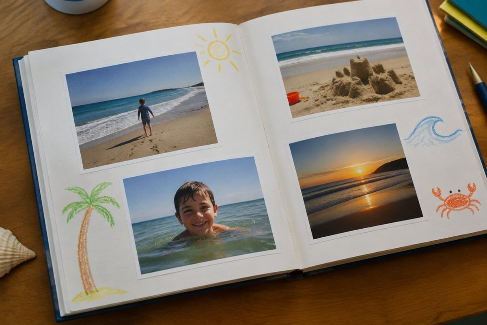

전체 단원 › 5~6학년 › 영어 › 지난 일 말하기
어제 한 일을 영어로 말해 볼까?

주말에 무엇을 했는지 친구에게 이야기하고 싶을 때가 있죠? 이미 지나간 일은 영어로 조금 다르게 말해요.
지난 일은 동사 모양이 바뀌어요
어제나 지난주처럼 이미 지나간 일을 말할 때는 동사의 모양을 바꿔요. 이것을 과거형이라고 해요.
대부분은 동사 뒤에 -ed를 붙여요. play → played, watch → watched, visit → visited처럼요.
I played soccer yesterday. (나는 어제 축구를 했어.)
모양이 특별하게 바뀌는 동사
어떤 동사는 -ed를 붙이지 않고 모양이 완전히 바뀌어요. go → went, eat → ate, see → saw, have → had, make → made예요.
이런 동사는 자주 쓰니까 짝을 지어 외워 두면 좋아요.
I went to the beach. I ate ice cream.
지난 일 묻고 답하기
"What did you do yesterday?(너는 어제 무엇을 했니?)"라고 물어요. did는 지난 일을 물을 때 쓰는 말이에요.
대답은 과거형을 써서 "I visited my grandma.(할머니 댁에 갔어.)"처럼 해요. 때를 나타내는 말 yesterday(어제), last weekend(지난 주말)를 함께 쓰면 좋아요.
What did you do last weekend? - I went camping.
핵심 낱말
- 과거형
- 이미 지나간 일을 나타내는 동사 모양
- -ed
- 과거형을 만들 때 동사 뒤에 붙이는 말
- yesterday
- 어제
- last weekend
- 지난 주말
- did
- 지난 일을 물을 때 쓰는 말
꼭 알아야 할 표현
| What did you do yesterday? | 너는 어제 무엇을 했니? | 지난 일을 물을 때 |
| I played soccer. | 나는 축구를 했어. | |
| I watched a movie. | 나는 영화를 봤어. | |
| I went to the beach. | 나는 바닷가에 갔어. | |
| I visited my grandma. | 나는 할머니 댁에 갔어. | |
| I ate pizza. | 나는 피자를 먹었어. | |
| It was fun! | 재미있었어! | 지난 일에 대한 느낌을 말할 때 |
한 줄 정리
- 지나간 일은 동사의 과거형으로 말해요. 대부분 -ed를 붙여요.
- go-went, eat-ate, see-saw처럼 모양이 바뀌는 동사도 있어요.
- 지난 일은 What did you do ~?로 묻고 과거형으로 대답해요.